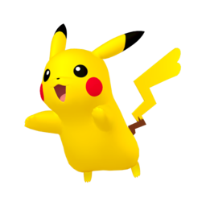

Pokemon
Pokemon é um mundo imenso podendo falar de varios tópicos sobre o universo. porem precisamos do contexto inicial do mundo de pokemon, em pokemon existem animais com poderes e formato diferentes denominado obviamente, de pokemons, um dos mais famosos seria o Pikachu o pokemon mascote da franquia toda
iniciais

e podemos tambem ter-los como companheiro geralmente, quando você completa uma certa idade, a idade de maioria, voce é capaz de escolher um incial pokemon, entre três opçoes voce pode escolher pokemon de três tipos elementares, como:
- Fogo
- agua
- grama

os inciais vao depender de geração por geração, depois de um certo tempo surge uma nova geração com novos pokemons e iniciais, atualmente esta lançando mais uma nova geração, veja: